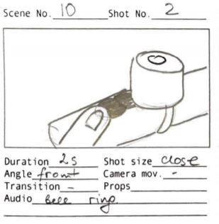
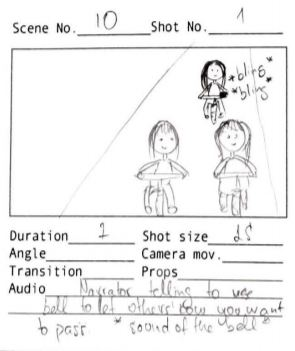

The storyboard was a bit tricky as we could not imagine the way how we are going to film the video, we sort of wanted to start filming and then see how each scene goes. But we were pushed to do that and it acutally helped us later in our filming process.
It was much easier to follow the story line when we had the story board drawn. We would always check the story board before fiming, and it made it easier not to forgen anything.

